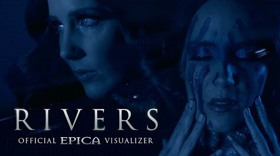

Become one with imagination
No more fairytales (No more fairytales)
Our souls will unite together
We will lift the veil
Your touch has turned to stone
No fire in your bones
It's time to leave the past behind
The road is neverending
All dreams will start ascending
Beyond the boundaries of the mind
Break loose from the chains
Rise above the waves
Fighting in the darkness
Dancing in the light
Break out of your cage
Turn another page
Drowning in the river
Swim against the tide of life
Holding tight to the ever after
Living for a sign (Living for a sign)
To survive raging storms together
Through the eye of time
The eye shows no reflection
No dreams without inception
Exists within oceans of time
Break loose from the chains
Rise above the waves
Fighting in the darkness
Dancing in the light
Break out of your cage
Turn another page
Drowning in the river
Swim against the tide of life
The coil in which we're living
Is more than another prison
The scheme of life became deranged
Dark clouds with silver linings
Attain the mysteries of shadow and shine
Break loose from the chains
Rise above the waves
Fighting in the darkness
Dancing in the light
Break out of your cage
Turn another page
Drowning in the river
Swim against the tide of life